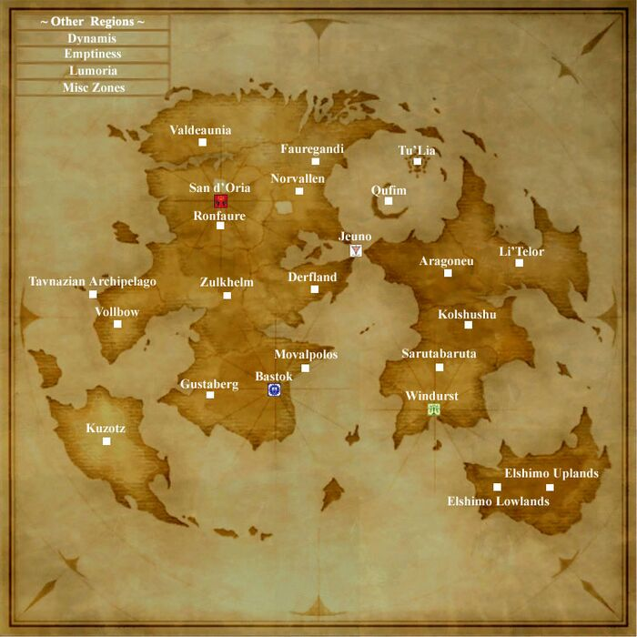
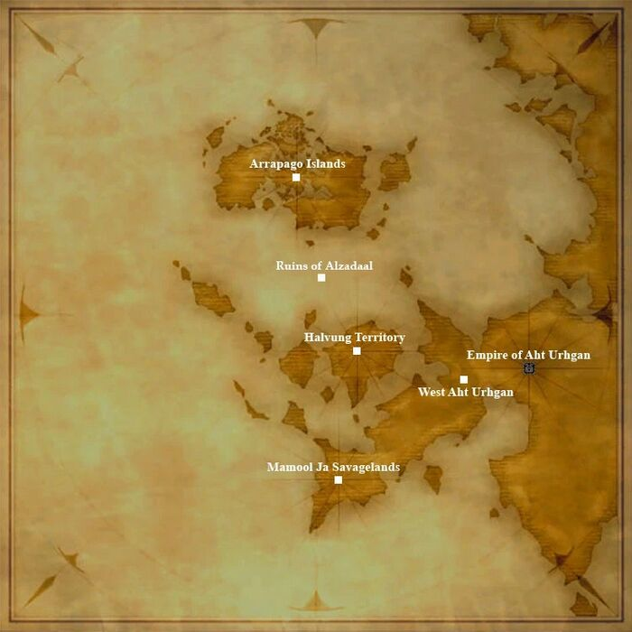

World Map






The Middle Lands
The Republic of Bastok
The Kingdom of San d'Oria
The Federation of Windurst
The Grand Duchy of Jeuno
Minor Cities
Outland Cities
Aragoneu
Derfland
Elshimo Lowlands
Elshimo Uplands
Fauregandi
Gustaberg
Kolshushu
Kuzotz
Li'Telor
Lumoria
Movalpolos
Norvallen
Qufim
Ronfaure
Sarutabaruta
Tavnazian Archipelago
Tavnazian Marquisate
Tu'Lia
Valdeaunia
Vollbow
Zulkheim
The Aradjiah Continent
The Empire of Aht Urhgan
Arrapago Islands
Halvung Territory
Mamool Ja Savagelands
Ruins of Alzadaal
West Aht Urhgan
The Shadowreign Era
The Aragoneu Front
The Derfland Front
The Fauregandi Front
The Gustaberg Front
The Norvallen Front
The Ronfaure Front
The Sarutabaruta Front
The Threshold
The Valdeaunia Front
The Ulbuka Continent
Other Areas
Articles
- Aht Urhgan Areas
- Aht Urhgan Whitegate
- Airship, Jeuno - Bastok
- Airship, Jeuno - Kazham
- Airship, Jeuno - San d'Oria
- Airship, Jeuno - Windurst
- Al Zahbi
- Al'Taieu
- Altar Room
- Alzadaal Undersea Ruins
- Apollyon
- Aradjiah
- Aragoneu
- Arrapago
- Arrapago Islands
- Arrapago Islands
- Arrapago Reef
- Arrapago Remnants
- Attohwa Chasm
- Aydeewa Subterrane
- Balga's Dais
- Bastok Markets
- Bastok Mines
- Bastok-Jeuno Airship
- Bastore Sea
- Batallia Downs
- Beadeaux
- Bearclaw Pinnacle
- Beaucedine Glacier
- Behemoth's Dominion
- Bhaflau Remnants
- Bhaflau Thickets
- Bibiki Bay
- Bibiki Bay - Purgonorgo Isle
- Boneyard Gully
- Bostaunieux Oubliette
- Boyahda Tree
- Brunhilde's Chamber
- Buburimu Peninsula
- Caedarva Mire
- Cape Teriggan
- Carpenters' Landing
- Castle Oztroja
- Castle Zvahl Baileys
- Castle Zvahl Keep
- Celestial Nexus
- Chamber of Oracles
- Chateau d'Oraguille
- Cloister of Flames
- Cloister of Frost
- Cloister of Gales
- Cloister of Storms
- Cloister of Tides
- Cloister of Tremors
- Crawler's Nest
- Crawlers’ Nest
- Dangruf Wadi
- Davoi
- Den of Rancor
- Derfland
- Dragon's Aery
- Dynamis
- Dynamis - Bastok
- Dynamis - Beaucedine
- Dynamis - Buburimu
- Dynamis - Jeuno
- Dynamis - San d'Oria
- Dynamis - Tavnazia
- Dynamis - Valkurm
- Dynamis - Windurst
- Dynamis - Xarcabard
- East Aht Urhgan
- East Ronfaure
- East Sarutabaruta
- Eastern Altepa Desert
- Eldieme Necropolis
- Elshimo Island
- Elshimo Lowlands
- Elshimo Uplands
- Emptiness
- Empyreal Paradox
- Fauregandi
- Fei'Yin
- Ferry - Al Zahbi/Nashmau
- Ferry - Mhaura/Al Zahbi
- Ferry - Nashmau/Al Zahbi
- Fort Ghelsba
- Full Moon Fountain
- Garlaige Citadel
- Gerhilde's Chamber
- Ghelsba Outpost
- Giddeus
- Grand Palace of Hu'Xzoi
- Grimgerde's Chamber
- Gustaberg
- Gustav Tunnel
- Hall of the Gods
- Halvung
- Halvung Territory
- Hazhalm Testing Grounds
- Heavens Tower
- Hediva Isle
- Helmwige's Chamber
- Horlais Peak
- Ifrit's Cauldron
- Ilrusi Atoll
- Inner Horutoto Ruins
- Jade Sepulcher
- Jugner Forest
- Kazham
- Kazham-Jeuno Airship
- King Ranperre's Tomb
- Kolshushu
- Konschtat Highlands
- Korroloka Tunnel
- Kuftal Tunnel
- Kuzotz
- La Theine Plateau
- La'Loff Amphitheater
- Labyrinth of Onzozo
- Lebros Cavern
- Leujaoam Sanctum
- Li'Telor
- Limbus
- Lower Delkfutt's Tower
- Lower Jeuno
- Lufaise Meadows
- Lumoria
- Mamook
- Mamool Ja Savagelands
- Mamool Ja Training Grounds
- Manaclipper
- Maze of Shakhrami
- Meriphataud Mountains
- Metalworks
- Mhaura
- Middle Delkfutt Tower
- Middle Delkfutt's Tower
- Mine Shaft
- Misareaux Coast
- Mog House
- Monarch Linn
- Monastic Cavern
- Mount Zhayolm
- Movalpolos
- Nashmau
- Navukgo Execution Chamber
- Newton Movalpolos
- Norg
- North Gustaberg
- Northern San d’Oria
- Norvallen
- Nyzul Isle
- Odin's Chamber
- Oldton Movalpolos
- Ordelle's Caves
- Ortlinde's Chamber
- Outer Horutoto Ruins
- Palborough Mines
- Pashhow Marshlands
- Periqia
- Phanauet Channel
- Phomiuna Aqueducts
- Port Bastok
- Port Jeuno
- Port San d'Oria
- Port Windurst
- Promyvion
- Promyvion - Dem
- Promyvion - Holla
- Promyvion - Mea
- Promyvion - Vahzl
- Pso'Xja
- Qu'Bia Arena
- Qufim
- Qufim Island
- Quicksand Caves
- Qulun Dome
- Rabao
- Ranguemont Pass
- Riverne - Site A01
- Riverne - Site B01
- Ro'Maeve
- Rolanberry Fields
- Ronfaure
- Rossweisse's Chamber
- Ru'Lude Gardens
- Ruins of Alzadaal
- Ru’Aun Gardens
- Sacrarium
- Sacrificial Chamber
- San d'Oria-Jeuno Airship
- Sanctuary of Zi'Tah
- Sarutabaruta
- Sauromugue Champaign
- Schwertleite's Chamber
- Sea
- Sea Serpent Grotto
- Sealion's Den
- Selbina
- Ship bound for Mhaura
- Ship bound for Selbina
- Shrine of Ru'Avitau
- Siegrune's Chamber
- Silver Sea Remnants
- Silver Sea route to Al Zahbi
- South Gustaberg
- Southern San d’Oria
- Spire of Dem
- Spire of Holla
- Spire of Mea
- Spire of Vahzl
- Stellar Fulcrum
- Tahrongi Canyon
- Talacca Cove
- Tavnazian Archipelago
- Tavnazian Marquisate
- Tavnazian Safehold
- Temenos
- Temple of Uggalepih
- The Ashu Talif
- The Boyahda Tree
- The Colosseum
- The Distant Continents of Vana'diel
- The Eldieme Necropolis
- The Garden of Ru'Hmet
- The Shrouded Maw
- Throne Room
- Toraimarai Canal
- Tu'Lia
- Uleguerand Range
- Upper Delkfutt Tower
- Upper Delkfutt's Tower
- Upper Jeuno
- Valdeaunia
- Valgrind
- Valkurm Dunes
- Valley of Sorrows
- Vana'diel
- Ve'Lugannon Palace
- Vollbow
- Wajaom Woodlands
- Walahra Temple
- Waltraute's Chamber
- Waughroon Shrine
- West Aht Urhgan
- West Ronfaure
- West Sarutabaruta
- Western Altepa Desert
- Windurst Walls
- Windurst Waters
- Windurst Woods
- Windurst-Jeuno Airship
- Xarcabard
- Yhoator Jungle
- Yughott Grotto
- Yuhtunga Jungle